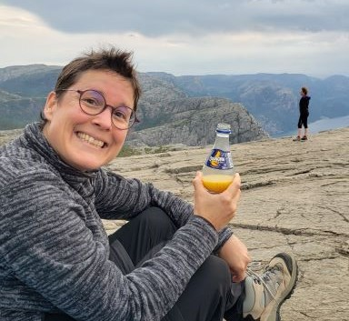

Géraldine Pérez
Développeuse web
Bonjour,
Je suis Géraldine Pérez
Issue des milieux du sport (Football et randonnée) puis de la santé, je vis mon métier comme une passion du quotidien. Riche de ces années, apprentissages et suite à quelques petits soucis de santé, je suis en pleine reconversion professionnelle. Autant me diriger vers un domaine qui m'attire depuis longtemps, me voilà partie depuis plus de deux ans vers un nouveau monde, celui du développement web.
About me
Mon nom : Géraldine Pérez
Age : 42 ans
Formation : Ecole O'clock
Spécialité : développeuse web fullstack
Langues : Français, espagnol courant, anglais niveau école
19
années d'activité professionnelle dans la santé en tant que masseur-kinésithérapeute
100+
projets de voyage "in the world"
100+
envie de bien développer et d'apprendre
Mes formations
Décembre 2022 - Mai 2023
Développeuse web Fullstack
J'ai eu la chance d'avoir connu l'école O'Clock et d'avoir accès à leur formation concentrée sur 6 mois pour devenir développeur et web mobile Fullstack JavaScript. Le but était de coder quotidiennement en suivant leur fil conducteur, en apprenant à travailler seul (challenges en solo, recherche sur la doc) et ensemble (challenges en équipe, projet final en équipe imposée). Pendant le socle commun, nous avons appris les bases HTML, CSS et JavaScript en front puis les SGBDR (PostgreSQL avec Node.js), le SQL, l'architecture de projet, les POO, le MVC, le CRUD, Ajax. Les notions d'Agile, de SEO et de cybersécurité se sont intégrées à chaque niveau. Le quatrième mois, on choisit une spécialité, j'ai choisi le Back où on est partis plus loin que le socle. Le cinquième mois, c'est l'apothéose, nous construisons de A à Z en équipe (4) un projet pré-défini. Notre sujet a été un site où chacun peut proposer des sorties sportives. Le projet est conduit comme si on était en entreprise (notions de sprints avec les rétrospectives, dates butoirs, utilisation de Notion, Slack, Discord, SCRUM). À chaque rétrospective (4), l’un de nous présente le projet à toute la classe. Cette expérience a été très riche en apprentissage général (technique et humain), nous avons su former une équipe solidaire pour arriver à bout du projet qui paraissait pharaonique.
Octobre 2023
Passage du titre professionnel développeur et web mobile, niveau V RNCP
Dès la fin de la formation, j'ai pu reprendre mon travail dans le domaine de la santé le 1er juin. Je me suis inscrite pour passer le titre professionnel à Paris le 26 octobre 2023. J'ai concentré mes efforts sur la préparation des dossiers à présenter à l'examen en dehors de mes heures de travail. Présenter le projet d'apothéose devant le jury à l'oral a également été un bel exercice. Ces efforts ont été valorisés, me permettant ainsi de valider les acquis des derniers mois grâce à l'obtention de ce diplôme.
2024
Recherche d'une alternance dans le développement web et création de projets
Après l'obtention du diplôme, je sens le besoin d'enchaîner sur une alternance en entreprise pour à la fois continuer ma formation et démarrer dans le milieu professionnel. Je recherche donc activement un stage en alternance essentiellement dans le secteur de Perpignan mais je reste ouverte à toute proposition dans la région.